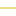
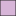
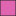

<!doctype html>
<html lang="en">
    <head>
        <meta charset="utf-8">
        <meta http-equiv="X-UA-Compatible" content="IE=edge">
        <meta name="viewport" content="initial-scale=1,user-scalable=no,maximum-scale=1,width=device-width">
        <meta name="mobile-web-app-capable" content="yes">
        <meta name="apple-mobile-web-app-capable" content="yes">
        <link rel="stylesheet" href="css/leaflet.css">
        <link rel="stylesheet" href="css/L.Control.Layers.Tree.css">
        <link rel="stylesheet" href="css/L.Control.Locate.min.css">
        <link rel="stylesheet" href="css/qgis2web.css">
        <link rel="stylesheet" href="css/fontawesome-all.min.css">
        <link rel="stylesheet" href="css/MarkerCluster.css">
        <link rel="stylesheet" href="css/MarkerCluster.Default.css">
        <link rel="stylesheet" href="css/leaflet-search.css">
        <link rel="stylesheet" href="css/leaflet.photon.css">
        <link rel="stylesheet" href="css/leaflet-measure.css">
        <style>
        html, body, #map {
            width: 100%;
            height: 100%;
            padding: 0;
            margin: 0;
        }
        </style>
        <title>Das globale Unterwasserkabel-Netzwerk</title>
    </head>
    <body>
        <div id="map">
        </div>
        <script src="js/qgis2web_expressions.js"></script>
        <script src="js/leaflet.js"></script>
        <script src="js/L.Control.Layers.Tree.min.js"></script>
        <script src="js/L.Control.Locate.min.js"></script>
        <script src="js/leaflet.rotatedMarker.js"></script>
        <script src="js/leaflet.pattern.js"></script>
        <script src="js/leaflet-hash.js"></script>
        <script src="js/Autolinker.min.js"></script>
        <script src="js/rbush.min.js"></script>
        <script src="js/labelgun.min.js"></script>
        <script src="js/labels.js"></script>
        <script src="js/leaflet.photon.js"></script>
        <script src="js/leaflet-measure.js"></script>
        <script src="js/leaflet.markercluster.js"></script>
        <script src="js/leaflet-search.js"></script>
        <script src="data/LndernachAnzahlderLandepunkte_3.js"></script>
        <script src="data/Lnder_4.js"></script>
        <script src="data/LandepunkteAnzahlderKabel_5.js"></script>
        <script src="data/Unterwasserkabel_6.js"></script>
        <script>
        var highlightLayer;
        function highlightFeature(e) {
            highlightLayer = e.target;

            if (e.target.feature.geometry.type === 'LineString' || e.target.feature.geometry.type === 'MultiLineString') {
              highlightLayer.setStyle({
                color: 'rgba(255, 255, 0, 0.44)',
              });
            } else {
              highlightLayer.setStyle({
                fillColor: 'rgba(255, 255, 0, 0.44)',
                fillOpacity: 1
              });
            }
        }
        var map = L.map('map', {
            zoomControl:false, maxZoom:28, minZoom:1
        }).fitBounds([[-58.7270634284054,-124.9609489321418],[81.36919457433793,116.25626638035823]]);
        var hash = new L.Hash(map);
        map.attributionControl.setPrefix('<a href="https://github.com/tomchadwin/qgis2web" target="_blank">qgis2web</a> &middot; <a href="https://leafletjs.com" title="A JS library for interactive maps">Leaflet</a> &middot; <a href="https://qgis.org">QGIS</a>');
        var autolinker = new Autolinker({truncate: {length: 30, location: 'smart'}});
        // remove popup's row if "visible-with-data"
        function removeEmptyRowsFromPopupContent(content, feature) {
         var tempDiv = document.createElement('div');
         tempDiv.innerHTML = content;
         var rows = tempDiv.querySelectorAll('tr');
         for (var i = 0; i < rows.length; i++) {
             var td = rows[i].querySelector('td.visible-with-data');
             var key = td ? td.id : '';
             if (td && td.classList.contains('visible-with-data') && feature.properties[key] == null) {
                 rows[i].parentNode.removeChild(rows[i]);
             }
         }
         return tempDiv.innerHTML;
        }
        // modify popup if contains media
        function addClassToPopupIfMedia(content, popup) {
            var tempDiv = document.createElement('div');
            tempDiv.innerHTML = content;
            var imgTd = tempDiv.querySelector('td img');
            if (imgTd) {
                var src = imgTd.getAttribute('src');
                if (/\.(jpg|jpeg|png|gif|bmp|webp|avif)$/i.test(src)) {
                    popup._contentNode.classList.add('media');
                    setTimeout(function() {
                        popup.update();
                    }, 10);
                } else if (/\.(mp3|wav|ogg|aac)$/i.test(src)) {
                    var audio = document.createElement('audio');
                    audio.controls = true;
                    audio.src = src;
                    imgTd.parentNode.replaceChild(audio, imgTd);
                    popup._contentNode.classList.add('media');
                    setTimeout(function() {
                        popup.setContent(tempDiv.innerHTML);
                        popup.update();
                    }, 10);
                } else if (/\.(mp4|webm|ogg|mov)$/i.test(src)) {
                    var video = document.createElement('video');
                    video.controls = true;
                    video.src = src;
                    video.style.width = "400px";
                    video.style.height = "300px";
                    video.style.maxHeight = "60vh";
                    video.style.maxWidth = "60vw";
                    imgTd.parentNode.replaceChild(video, imgTd);
                    popup._contentNode.classList.add('media');
                    // Aggiorna il popup quando il video carica i metadati
                    video.addEventListener('loadedmetadata', function() {
                        popup.update();
                    });
                    setTimeout(function() {
                        popup.setContent(tempDiv.innerHTML);
                        popup.update();
                    }, 10);
                } else {
                    popup._contentNode.classList.remove('media');
                }
            } else {
                popup._contentNode.classList.remove('media');
            }
        }
        var title = new L.Control({'position':'topright'});
        title.onAdd = function (map) {
            this._div = L.DomUtil.create('div', 'info');
            this.update();
            return this._div;
        };
        title.update = function () {
            this._div.innerHTML = '<h2>Das globale Unterwasserkabel-Netzwerk</h2>';
        };
        title.addTo(map);
        var abstract = new L.Control({'position':'bottomleft'});
        abstract.onAdd = function (map) {
            this._div = L.DomUtil.create('div',
            'leaflet-control abstract');
            this._div.id = 'abstract'
                this._div.setAttribute("onmouseenter", "abstract.show()");
                this._div.setAttribute("onmouseleave", "abstract.hide()");
                this.hide();
                return this._div;
            };
            abstract.hide = function () {
                this._div.classList.remove("abstractUncollapsed");
                this._div.classList.add("abstract");
                this._div.innerHTML = 'i'
            }
            abstract.show = function () {
                this._div.classList.remove("abstract");
                this._div.classList.add("abstractUncollapsed");
                this._div.innerHTML = 'Interaktive Karte des weltweiten Seekabelnetzes mit Darstellung des Betriebsstatus und der Kapazität der Landungspunkte. Die strategische Bedeutung einzelner Staaten wird durch eine flächendeckende Analyse hervorgehoben, welche die Länder nach der Anzahl ihrer Anlandungspunkte farblich in fünf Klassen unterteilt.';
        };
        abstract.addTo(map);
        var zoomControl = L.control.zoom({
            position: 'topleft'
        }).addTo(map);
        L.control.locate({locateOptions: {maxZoom: 19}}).addTo(map);
        var measureControl = new L.Control.Measure({
            position: 'topleft',
            primaryLengthUnit: 'meters',
            secondaryLengthUnit: 'kilometers',
            primaryAreaUnit: 'sqmeters',
            secondaryAreaUnit: 'hectares'
        });
        measureControl.addTo(map);
        document.getElementsByClassName('leaflet-control-measure-toggle')[0].innerHTML = '';
        document.getElementsByClassName('leaflet-control-measure-toggle')[0].className += ' fas fa-ruler';
        var bounds_group = new L.featureGroup([]);
        function setBounds() {
        }
        map.createPane('pane_ESRISatellite_0');
        map.getPane('pane_ESRISatellite_0').style.zIndex = 400;
        var layer_ESRISatellite_0 = L.tileLayer('https://server.arcgisonline.com/ArcGIS/rest/services/World_Imagery/MapServer/tile/{z}/{y}/{x}', {
            pane: 'pane_ESRISatellite_0',
            opacity: 1.0,
            attribution: '',
            minZoom: 1,
            maxZoom: 28,
            minNativeZoom: 0,
            maxNativeZoom: 20
        });
        layer_ESRISatellite_0;
        map.createPane('pane_DarkMatterretina_1');
        map.getPane('pane_DarkMatterretina_1').style.zIndex = 401;
        var layer_DarkMatterretina_1 = L.tileLayer('https://a.basemaps.cartocdn.com/dark_nolabels/{z}/{x}/{y}@2x.png', {
            pane: 'pane_DarkMatterretina_1',
            opacity: 1.0,
            attribution: '<a href="https://cartodb.com/basemaps/">Map tiles by CartoDB, under CC BY 3.0. Data by OpenStreetMap, under ODbL.</a>',
            minZoom: 1,
            maxZoom: 28,
            minNativeZoom: 0,
            maxNativeZoom: 20
        });
        layer_DarkMatterretina_1;
        map.addLayer(layer_DarkMatterretina_1);
        map.createPane('pane_Voyagerretina_2');
        map.getPane('pane_Voyagerretina_2').style.zIndex = 402;
        var layer_Voyagerretina_2 = L.tileLayer('https://a.basemaps.cartocdn.com/rastertiles/voyager_nolabels/{z}/{x}/{y}@2x.png', {
            pane: 'pane_Voyagerretina_2',
            opacity: 1.0,
            attribution: '',
            minZoom: 1,
            maxZoom: 28,
            minNativeZoom: 0,
            maxNativeZoom: 18
        });
        layer_Voyagerretina_2;
        function pop_LndernachAnzahlderLandepunkte_3(feature, layer) {
            layer.on({
                mouseout: function(e) {
                    for (var i in e.target._eventParents) {
                        if (typeof e.target._eventParents[i].resetStyle === 'function') {
                            e.target._eventParents[i].resetStyle(e.target);
                        }
                    }
                },
                mouseover: highlightFeature,
            });
        }

        function style_LndernachAnzahlderLandepunkte_3_0(feature) {
            if (feature.properties['q2wHide_anzahl_landepunkte'] >= 0.000000 && feature.properties['q2wHide_anzahl_landepunkte'] <= 5.000000 ) {
                return {
                pane: 'pane_LndernachAnzahlderLandepunkte_3',
                opacity: 1,
                color: 'rgba(35,35,35,1.0)',
                dashArray: '',
                lineCap: 'butt',
                lineJoin: 'miter',
                weight: 1.0, 
                fill: true,
                fillOpacity: 1,
                fillColor: 'rgba(241,238,246,1.0)',
                interactive: true,
            }
            }
            if (feature.properties['q2wHide_anzahl_landepunkte'] >= 5.000000 && feature.properties['q2wHide_anzahl_landepunkte'] <= 20.000000 ) {
                return {
                pane: 'pane_LndernachAnzahlderLandepunkte_3',
                opacity: 1,
                color: 'rgba(35,35,35,1.0)',
                dashArray: '',
                lineCap: 'butt',
                lineJoin: 'miter',
                weight: 1.0, 
                fill: true,
                fillOpacity: 1,
                fillColor: 'rgba(215,181,216,1.0)',
                interactive: true,
            }
            }
            if (feature.properties['q2wHide_anzahl_landepunkte'] >= 20.000000 && feature.properties['q2wHide_anzahl_landepunkte'] <= 50.000000 ) {
                return {
                pane: 'pane_LndernachAnzahlderLandepunkte_3',
                opacity: 1,
                color: 'rgba(35,35,35,1.0)',
                dashArray: '',
                lineCap: 'butt',
                lineJoin: 'miter',
                weight: 1.0, 
                fill: true,
                fillOpacity: 1,
                fillColor: 'rgba(223,101,176,1.0)',
                interactive: true,
            }
            }
            if (feature.properties['q2wHide_anzahl_landepunkte'] >= 50.000000 && feature.properties['q2wHide_anzahl_landepunkte'] <= 100.000000 ) {
                return {
                pane: 'pane_LndernachAnzahlderLandepunkte_3',
                opacity: 1,
                color: 'rgba(35,35,35,1.0)',
                dashArray: '',
                lineCap: 'butt',
                lineJoin: 'miter',
                weight: 1.0, 
                fill: true,
                fillOpacity: 1,
                fillColor: 'rgba(221,28,119,1.0)',
                interactive: true,
            }
            }
            if (feature.properties['q2wHide_anzahl_landepunkte'] >= 100.000000 && feature.properties['q2wHide_anzahl_landepunkte'] <= 130.000000 ) {
                return {
                pane: 'pane_LndernachAnzahlderLandepunkte_3',
                opacity: 1,
                color: 'rgba(35,35,35,1.0)',
                dashArray: '',
                lineCap: 'butt',
                lineJoin: 'miter',
                weight: 1.0, 
                fill: true,
                fillOpacity: 1,
                fillColor: 'rgba(152,0,67,1.0)',
                interactive: true,
            }
            }
        }
        map.createPane('pane_LndernachAnzahlderLandepunkte_3');
        map.getPane('pane_LndernachAnzahlderLandepunkte_3').style.zIndex = 403;
        map.getPane('pane_LndernachAnzahlderLandepunkte_3').style['mix-blend-mode'] = 'normal';
        var layer_LndernachAnzahlderLandepunkte_3 = new L.geoJson(json_LndernachAnzahlderLandepunkte_3, {
            attribution: '',
            interactive: true,
            dataVar: 'json_LndernachAnzahlderLandepunkte_3',
            layerName: 'layer_LndernachAnzahlderLandepunkte_3',
            pane: 'pane_LndernachAnzahlderLandepunkte_3',
            onEachFeature: pop_LndernachAnzahlderLandepunkte_3,
            style: style_LndernachAnzahlderLandepunkte_3_0,
        });
        bounds_group.addLayer(layer_LndernachAnzahlderLandepunkte_3);
        function pop_Lnder_4(feature, layer) {
            layer.on({
                mouseout: function(e) {
                    for (var i in e.target._eventParents) {
                        if (typeof e.target._eventParents[i].resetStyle === 'function') {
                            e.target._eventParents[i].resetStyle(e.target);
                        }
                    }
                },
                mouseover: highlightFeature,
            });
            var popupContent = '<table>\
                    <tr>\
                        <th scope="row">Kontinent</th>\
                        <td class="visible-with-data" id="continent">' + (feature.properties['continent'] !== null ? autolinker.link(String(feature.properties['continent']).replace(/'/g, '\'').toLocaleString()) : '') + '</td>\
                    </tr>\
                    <tr>\
                        <th scope="row">Land</th>\
                        <td class="visible-with-data" id="name_de">' + (feature.properties['name_de'] !== null ? autolinker.link(String(feature.properties['name_de']).replace(/'/g, '\'').toLocaleString()) : '') + '</td>\
                    </tr>\
                    <tr>\
                        <th scope="row">Anzahl Landepunkte</th>\
                        <td class="visible-with-data" id="anzahl_landepunkte">' + (feature.properties['anzahl_landepunkte'] !== null ? autolinker.link(String(feature.properties['anzahl_landepunkte']).replace(/'/g, '\'').toLocaleString()) : '') + '</td>\
                    </tr>\
                </table>';
            var content = removeEmptyRowsFromPopupContent(popupContent, feature);
			layer.on('popupopen', function(e) {
				addClassToPopupIfMedia(content, e.popup);
			});
			layer.bindPopup(content, { maxHeight: 400 });
        }

        function style_Lnder_4_0() {
            return {
                pane: 'pane_Lnder_4',
                opacity: 1,
                color: 'rgba(35,35,35,1.0)',
                dashArray: '',
                lineCap: 'butt',
                lineJoin: 'miter',
                weight: 1.0, 
                fillOpacity: 0,
                interactive: true,
            }
        }
        map.createPane('pane_Lnder_4');
        map.getPane('pane_Lnder_4').style.zIndex = 404;
        map.getPane('pane_Lnder_4').style['mix-blend-mode'] = 'normal';
        var layer_Lnder_4 = new L.geoJson(json_Lnder_4, {
            attribution: '',
            interactive: true,
            dataVar: 'json_Lnder_4',
            layerName: 'layer_Lnder_4',
            pane: 'pane_Lnder_4',
            onEachFeature: pop_Lnder_4,
            style: style_Lnder_4_0,
        });
        bounds_group.addLayer(layer_Lnder_4);
        map.addLayer(layer_Lnder_4);
        function pop_LandepunkteAnzahlderKabel_5(feature, layer) {
            layer.on({
                mouseout: function(e) {
                    for (var i in e.target._eventParents) {
                        if (typeof e.target._eventParents[i].resetStyle === 'function') {
                            e.target._eventParents[i].resetStyle(e.target);
                        }
                    }
                },
                mouseover: highlightFeature,
            });
            var popupContent = '<table>\
                    <tr>\
                        <th scope="row">name</th>\
                        <td class="visible-with-data" id="name">' + (feature.properties['name'] !== null ? autolinker.link(String(feature.properties['name']).replace(/'/g, '\'').toLocaleString()) : '') + '</td>\
                    </tr>\
                    <tr>\
                        <th scope="row">cable_count</th>\
                        <td class="visible-with-data" id="cable_count">' + (feature.properties['cable_count'] !== null ? autolinker.link(String(feature.properties['cable_count']).replace(/'/g, '\'').toLocaleString()) : '') + '</td>\
                    </tr>\
                </table>';
            var content = removeEmptyRowsFromPopupContent(popupContent, feature);
			layer.on('popupopen', function(e) {
				addClassToPopupIfMedia(content, e.popup);
			});
			layer.bindPopup(content, { maxHeight: 400 });
        }

        function style_LandepunkteAnzahlderKabel_5_0(feature) {
            if (feature.properties['cable_count'] >= 0.000000 && feature.properties['cable_count'] <= 2.000000 ) {
                return {
                pane: 'pane_LandepunkteAnzahlderKabel_5',
                radius: 4.0,
                opacity: 1,
                color: 'rgba(35,35,35,1.0)',
                dashArray: '',
                lineCap: 'butt',
                lineJoin: 'miter',
                weight: 1,
                fill: true,
                fillOpacity: 1,
                fillColor: 'rgba(255,234,6,1.0)',
                interactive: true,
            }
            }
            if (feature.properties['cable_count'] >= 2.000000 && feature.properties['cable_count'] <= 6.000000 ) {
                return {
                pane: 'pane_LandepunkteAnzahlderKabel_5',
                radius: 4.0,
                opacity: 1,
                color: 'rgba(35,35,35,1.0)',
                dashArray: '',
                lineCap: 'butt',
                lineJoin: 'miter',
                weight: 1,
                fill: true,
                fillOpacity: 1,
                fillColor: 'rgba(241,130,17,1.0)',
                interactive: true,
            }
            }
            if (feature.properties['cable_count'] >= 6.000000 && feature.properties['cable_count'] <= 20.000000 ) {
                return {
                pane: 'pane_LandepunkteAnzahlderKabel_5',
                radius: 4.0,
                opacity: 1,
                color: 'rgba(35,35,35,1.0)',
                dashArray: '',
                lineCap: 'butt',
                lineJoin: 'miter',
                weight: 1,
                fill: true,
                fillOpacity: 1,
                fillColor: 'rgba(227,26,28,1.0)',
                interactive: true,
            }
            }
        }
        map.createPane('pane_LandepunkteAnzahlderKabel_5');
        map.getPane('pane_LandepunkteAnzahlderKabel_5').style.zIndex = 405;
        map.getPane('pane_LandepunkteAnzahlderKabel_5').style['mix-blend-mode'] = 'normal';
        var layer_LandepunkteAnzahlderKabel_5 = new L.geoJson(json_LandepunkteAnzahlderKabel_5, {
            attribution: '',
            interactive: true,
            dataVar: 'json_LandepunkteAnzahlderKabel_5',
            layerName: 'layer_LandepunkteAnzahlderKabel_5',
            pane: 'pane_LandepunkteAnzahlderKabel_5',
            onEachFeature: pop_LandepunkteAnzahlderKabel_5,
            pointToLayer: function (feature, latlng) {
                var context = {
                    feature: feature,
                    variables: {}
                };
                return L.circleMarker(latlng, style_LandepunkteAnzahlderKabel_5_0(feature));
            },
        });
        var cluster_LandepunkteAnzahlderKabel_5 = new L.MarkerClusterGroup({showCoverageOnHover: false,
            spiderfyDistanceMultiplier: 2});
        cluster_LandepunkteAnzahlderKabel_5.addLayer(layer_LandepunkteAnzahlderKabel_5);

        bounds_group.addLayer(layer_LandepunkteAnzahlderKabel_5);
        cluster_LandepunkteAnzahlderKabel_5.addTo(map);
        function pop_Unterwasserkabel_6(feature, layer) {
            layer.on({
                mouseout: function(e) {
                    for (var i in e.target._eventParents) {
                        if (typeof e.target._eventParents[i].resetStyle === 'function') {
                            e.target._eventParents[i].resetStyle(e.target);
                        }
                    }
                },
                mouseover: highlightFeature,
            });
            var popupContent = '<table>\
                    <tr>\
                        <th scope="row">Name</th>\
                        <td class="visible-with-data" id="name">' + (feature.properties['name'] !== null ? autolinker.link(String(feature.properties['name']).replace(/'/g, '\'').toLocaleString()) : '') + '</td>\
                    </tr>\
                    <tr>\
                        <th scope="row">Bild</th>\
                        <td class="visible-with-data" id="bild">' + (feature.properties['bild'] !== null ? autolinker.link(String(feature.properties['bild']).replace(/'/g, '\'').toLocaleString()) : '') + '</td>\
                    </tr>\
                    <tr>\
                        <th scope="row">Bildquelle</th>\
                        <td class="visible-with-data" id="url_bild">' + (feature.properties['url_bild'] !== null ? autolinker.link(String(feature.properties['url_bild']).replace(/'/g, '\'').toLocaleString()) : '') + '</td>\
                    </tr>\
                    <tr>\
                        <th scope="row">Kabellänge (gemessen)</th>\
                        <td class="visible-with-data" id="length_map_sting">' + (feature.properties['length_map_sting'] !== null ? autolinker.link(String(feature.properties['length_map_sting']).replace(/'/g, '\'').toLocaleString()) : '') + '</td>\
                    </tr>\
                    <tr>\
                        <th scope="row">Kabellänge (original)</th>\
                        <td class="visible-with-data" id="cable_length_de">' + (feature.properties['cable_length_de'] !== null ? autolinker.link(String(feature.properties['cable_length_de']).replace(/'/g, '\'').toLocaleString()) : '') + '</td>\
                    </tr>\
                    <tr>\
                        <th scope="row">Status</th>\
                        <td class="visible-with-data" id="status_de">' + (feature.properties['status_de'] !== null ? autolinker.link(String(feature.properties['status_de']).replace(/'/g, '\'').toLocaleString()) : '') + '</td>\
                    </tr>\
                    <tr>\
                        <th scope="row">Jahr</th>\
                        <td class="visible-with-data" id="year_rfs">' + (feature.properties['year_rfs'] !== null ? autolinker.link(String(feature.properties['year_rfs']).replace(/'/g, '\'').toLocaleString()) : '') + '</td>\
                    </tr>\
                </table>';
            var content = removeEmptyRowsFromPopupContent(popupContent, feature);
			layer.on('popupopen', function(e) {
				addClassToPopupIfMedia(content, e.popup);
			});
			layer.bindPopup(content, { maxHeight: 400 });
        }

        function style_Unterwasserkabel_6_0(feature) {
            switch(String(feature.properties['status_de'])) {
                case 'aktiv':
                    return {
                pane: 'pane_Unterwasserkabel_6',
                opacity: 1,
                color: 'rgba(208,38,148,1.0)',
                dashArray: '',
                lineCap: 'square',
                lineJoin: 'bevel',
                weight: 1.0,
                fillOpacity: 0,
                interactive: true,
            }
                    break;
                case 'geplannt':
                    return {
                pane: 'pane_Unterwasserkabel_6',
                opacity: 1,
                color: 'rgba(48,76,234,1.0)',
                dashArray: '',
                lineCap: 'square',
                lineJoin: 'bevel',
                weight: 1.0,
                fillOpacity: 0,
                interactive: true,
            }
                    break;
                case 'nan':
                    return {
                pane: 'pane_Unterwasserkabel_6',
                opacity: 1,
                color: 'rgba(215,185,13,1.0)',
                dashArray: '',
                lineCap: 'square',
                lineJoin: 'bevel',
                weight: 1.0,
                fillOpacity: 0,
                interactive: true,
            }
                    break;
            }
        }
        map.createPane('pane_Unterwasserkabel_6');
        map.getPane('pane_Unterwasserkabel_6').style.zIndex = 406;
        map.getPane('pane_Unterwasserkabel_6').style['mix-blend-mode'] = 'normal';
        var layer_Unterwasserkabel_6 = new L.geoJson(json_Unterwasserkabel_6, {
            attribution: '',
            interactive: true,
            dataVar: 'json_Unterwasserkabel_6',
            layerName: 'layer_Unterwasserkabel_6',
            pane: 'pane_Unterwasserkabel_6',
            onEachFeature: pop_Unterwasserkabel_6,
            style: style_Unterwasserkabel_6_0,
        });
        bounds_group.addLayer(layer_Unterwasserkabel_6);
        map.addLayer(layer_Unterwasserkabel_6);
        const url = {"Nominatim OSM": "https://nominatim.openstreetmap.org/search?format=geojson&addressdetails=1&",
        "France BAN": "https://api-adresse.data.gouv.fr/search/?"}
        var photonControl = L.control.photon({
            url: url["Nominatim OSM"],
            feedbackLabel: '',
            position: 'topleft',
            includePosition: true,
            initial: true,
            // resultsHandler: myHandler,
        }).addTo(map);
        photonControl._container.childNodes[0].style.borderRadius="10px"
        // Create a variable to store the geoJSON data
        var x = null;
        // Create a variable to store the marker
        var marker = null;
        // Add an event listener to the Photon control to create a marker from the returned geoJSON data
        var z = null;
        photonControl.on('selected', function(e) {
            console.log(photonControl.search.resultsContainer);
            if (x != null) {
                map.removeLayer(obj3.marker);
                map.removeLayer(x);
            }
            obj2.gcd = e.choice;
            x = L.geoJSON(obj2.gcd).addTo(map);
            var label = typeof obj2.gcd.properties.label === 'undefined' ? obj2.gcd.properties.display_name : obj2.gcd.properties.label;
            obj3.marker = L.marker(x.getLayers()[0].getLatLng()).bindPopup(label).addTo(map);
            map.setView(x.getLayers()[0].getLatLng(), 17);
            z = typeof e.choice.properties.label === 'undefined'? e.choice.properties.display_name : e.choice.properties.label;
            console.log(e);
            e.target.input.value = z;
        });
        var search = document.getElementsByClassName("leaflet-photon leaflet-control")[0];
        search.classList.add("leaflet-control-search")
        search.style.display = "flex";
        search.style.backgroundColor="rgba(255,255,255,0.5)" 

        // Create the new button element
        var button = document.createElement("div");
        button.id = "gcd-button-control";
        button.className = "gcd-gl-btn fa fa-search search-button";

        // Insert the button at the beginning of the search control
        search.insertBefore(button, search.firstChild);
        last = search.lastChild;
        last.style.display = "none";
        button.addEventListener("click", function (e) {
            if (last.style.display === "none") {
                last.style.display = "block";
            } else {
                last.style.display = "none";
            }
        });
        var overlaysTree = [
            {label: 'Unterwasserkabel<br /><table><tr><td style="text-align: center;"></td><td>aktiv</td></tr><tr><td style="text-align: center;"></td><td>geplannt</td></tr><tr><td style="text-align: center;"></td><td>nan</td></tr></table>', layer: layer_Unterwasserkabel_6},
            {label: 'Landepunkte (Anzahl der Kabel)<br /><table><tr><td style="text-align: center;"></td><td>0 - 2</td></tr><tr><td style="text-align: center;"></td><td>2 - 6</td></tr><tr><td style="text-align: center;"></td><td>6 - 20</td></tr></table>', layer: cluster_LandepunkteAnzahlderKabel_5},
            {label: ' Länder', layer: layer_Lnder_4},
            {label: 'Länder nach Anzahl der Landepunkte<br /><table><tr><td style="text-align: center;"></td><td>0 - 5</td></tr><tr><td style="text-align: center;"></td><td>5 - 20</td></tr><tr><td style="text-align: center;"></td><td>20 - 50</td></tr><tr><td style="text-align: center;"></td><td>50 - 100</td></tr><tr><td style="text-align: center;"></td><td>100 - 130</td></tr></table>', layer: layer_LndernachAnzahlderLandepunkte_3},
        {label: '<b>Basemaps</b>',  selectAllCheckbox: true, children: [
            {label: "Voyager (retina)", layer: layer_Voyagerretina_2, radioGroup: 'bm' },
            {label: "Dark Matter (retina)", layer: layer_DarkMatterretina_1, radioGroup: 'bm' },
            {label: "ESRI Satellite", layer: layer_ESRISatellite_0, radioGroup: 'bm' },]},]
        var lay = L.control.layers.tree(null, overlaysTree,{
            //namedToggle: true,
            //selectorBack: false,
            //closedSymbol: '&#8862; &#x1f5c0;',
            //openedSymbol: '&#8863; &#x1f5c1;',
            //collapseAll: 'Collapse all',
            //expandAll: 'Expand all',
            collapsed: true,
        });
        lay.addTo(map);
        setBounds();
        var i = 0;
        layer_Lnder_4.eachLayer(function(layer) {
            var context = {
                feature: layer.feature,
                variables: {}
            };
            layer.bindTooltip((layer.feature.properties['name_de'] !== null?String('<div style="color: #323232; font-size: 10pt; font-family: \'Open Sans\', sans-serif;">' + layer.feature.properties['name_de']) + '</div>':''), {permanent: true, offset: [-0, -16], className: 'css_Lnder_4'});
            labels.push(layer);
            totalMarkers += 1;
              layer.added = true;
              addLabel(layer, i);
              i++;
        });
        map.addControl(new L.Control.Search({
            layer: layer_LandepunkteAnzahlderKabel_5,
            initial: false,
            hideMarkerOnCollapse: true,
            propertyName: 'name'}));
        if (typeof url === 'undefined') {
            document.getElementsByClassName('search-button')[0].className += ' fa fa-binoculars';
        } else {
            document.getElementsByClassName('search-button')[1].className += ' fa fa-binoculars';
        }
        resetLabels([layer_LndernachAnzahlderLandepunkte_3,layer_Lnder_4]);
        map.on("zoomend", function(){
            resetLabels([layer_LndernachAnzahlderLandepunkte_3,layer_Lnder_4]);
        });
        map.on("layeradd", function(){
            resetLabels([layer_LndernachAnzahlderLandepunkte_3,layer_Lnder_4]);
        });
        map.on("layerremove", function(){
            resetLabels([layer_LndernachAnzahlderLandepunkte_3,layer_Lnder_4]);
        });
        </script>        
    </body>
</html>
